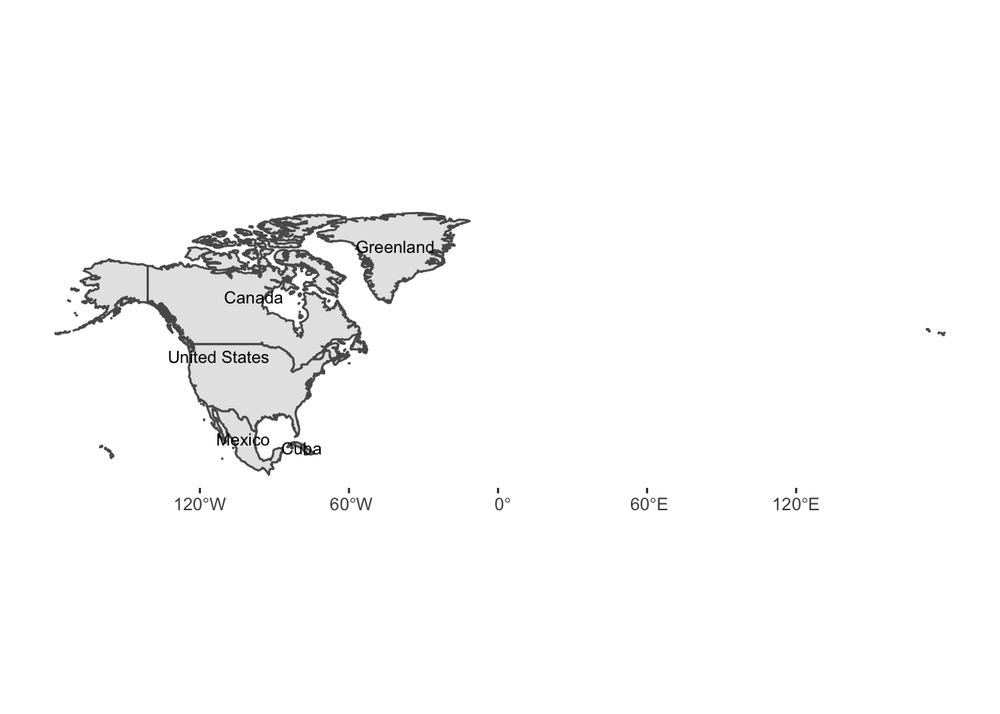
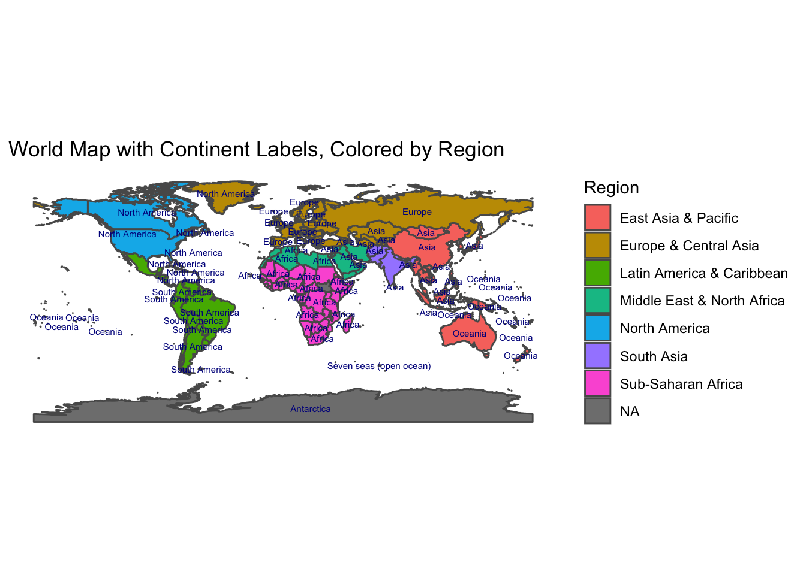

library(countrycode)
library(tidyverse)
library(sf)
library(rnaturalearth)
library(rnaturalearthdata)
library(rgeos)
world <- ne_countries(scale = "medium", returnclass = "sf")
coordinates <- cbind(world, st_coordinates(st_centroid(world$geometry)))
coordinates <-
coordinates %>%
select(name,sovereignt, type, X,Y)
Exercises
- Convert the name of a country of choice into five different languages of your choice. Use the world dataset and use countryname.
question1 <-
world %>%
filter(name == 'Argentina')
countryname(question1$name, 'cldr.name.zh')
## [1] "阿根廷"
countryname(question1$name, 'cldr.name.es')
## [1] "Argentina"
countryname(question1$name, 'cldr.name.ru')
## [1] "Аргентина"
countryname(question1$name, 'cldr.name.ar')
## [1] "الأرجنتين"
countryname(question1$name, 'cldr.name.fr')
## [1] "Argentine"
- Find the ‘region’ name and code for the top 30 countries. Use ‘countrycode’ for this.
question2 <-
world %>%
head(30)
countrycode(question2$name, origin = 'country.name', destination = 'region')
## [1] "Latin America & Caribbean" "South Asia"
## [3] "Sub-Saharan Africa" "Latin America & Caribbean"
## [5] "Europe & Central Asia" "Europe & Central Asia"
## [7] "Europe & Central Asia" "Middle East & North Africa"
## [9] "Latin America & Caribbean" "Europe & Central Asia"
## [11] "East Asia & Pacific" NA
## [13] NA NA
## [15] "Latin America & Caribbean" "East Asia & Pacific"
## [17] "Europe & Central Asia" "Europe & Central Asia"
## [19] "Sub-Saharan Africa" "Europe & Central Asia"
## [21] "Sub-Saharan Africa" "Sub-Saharan Africa"
## [23] "South Asia" "Europe & Central Asia"
## [25] "Middle East & North Africa" "Latin America & Caribbean"
## [27] "Europe & Central Asia" "Latin America & Caribbean"
## [29] "Europe & Central Asia" "Latin America & Caribbean"
- Use the guess_field() function to find the closest match of the origin of the adm0_a3 column in the world dataset.
guess_field(world$adm0_a3)
- Draw a map with 5 countries with different labels using geom_sf, geom_text and countryname
question4 <-
coordinates %>%
filter(name %in% c("United States", "Canada", "Greenland", "Mexico", "Cuba")) %>%
mutate(label = countryname(name, destination = 'un.name.en'))
ggplot() +
geom_sf(data = question4) +
geom_text(data=question4 ,aes(X, Y, label=name), size=3) +
labs(x = NULL,
y = NULL) +
theme(panel.background = element_blank())

- Draw a map that has each country named after the continent it belongs to and colored by their continent.
question5 <-
coordinates %>%
mutate(label = countryname(name, destination = 'region'))
ggplot(data = world) +
geom_sf(data = question5, aes(fill = label)) +
geom_text(data=question5 ,aes(X, Y, label=world$continent),
color = "darkblue", check_overlap = TRUE, size=2)+
labs(x = NULL,
y = NULL,
fill = "Region",
title = "World Map with Continent Labels, Colored by Region")+
theme(panel.background = element_blank())

LS0tCnRpdGxlOiAnQXNzaWdubWVudCAjNScKb3V0cHV0OiAKICBodG1sX2RvY3VtZW50OgogICAgdG9jOiB0cnVlCiAgICB0b2NfZmxvYXQ6IHRydWUKICAgIGRmX3ByaW50OiBwYWdlZAogICAgY29kZV9kb3dubG9hZDogdHJ1ZQotLS0KCgpgYGB7ciBzZXR1cCwgaW5jbHVkZT1GQUxTRX0Ka25pdHI6Om9wdHNfY2h1bmskc2V0KGVjaG8gPSBUUlVFLCBtZXNzYWdlPUZBTFNFLCB3YXJuaW5nPUZBTFNFKQpgYGAKCmBgYHtyIGxpYnJhcmllc30KbGlicmFyeShjb3VudHJ5Y29kZSkKbGlicmFyeSh0aWR5dmVyc2UpCmxpYnJhcnkoc2YpCmxpYnJhcnkocm5hdHVyYWxlYXJ0aCkKbGlicmFyeShybmF0dXJhbGVhcnRoZGF0YSkKbGlicmFyeShyZ2VvcykKYGBgCgoKYGBge3J9CndvcmxkIDwtIG5lX2NvdW50cmllcyhzY2FsZSA9ICJtZWRpdW0iLCByZXR1cm5jbGFzcyA9ICJzZiIpCmNvb3JkaW5hdGVzIDwtIGNiaW5kKHdvcmxkLCBzdF9jb29yZGluYXRlcyhzdF9jZW50cm9pZCh3b3JsZCRnZW9tZXRyeSkpKQpjb29yZGluYXRlcyA8LSAKICBjb29yZGluYXRlcyAlPiUKICBzZWxlY3QobmFtZSxzb3ZlcmVpZ250LCB0eXBlLCBYLFkpCmBgYAoKCgojIyBFeGVyY2lzZXMKCihAKSBDb252ZXJ0IHRoZSBuYW1lIG9mIGEgY291bnRyeSBvZiBjaG9pY2UgaW50byBmaXZlIGRpZmZlcmVudCBsYW5ndWFnZXMgb2YgeW91ciBjaG9pY2UuIFVzZSB0aGUgd29ybGQgZGF0YXNldCBhbmQgdXNlIGNvdW50cnluYW1lLiAKCmBgYHtyfQpxdWVzdGlvbjEgPC0KICB3b3JsZCAlPiUKICBmaWx0ZXIobmFtZSA9PSAnQXJnZW50aW5hJykKCmNvdW50cnluYW1lKHF1ZXN0aW9uMSRuYW1lLCAnY2xkci5uYW1lLnpoJykKY291bnRyeW5hbWUocXVlc3Rpb24xJG5hbWUsICdjbGRyLm5hbWUuZXMnKQpjb3VudHJ5bmFtZShxdWVzdGlvbjEkbmFtZSwgJ2NsZHIubmFtZS5ydScpCmNvdW50cnluYW1lKHF1ZXN0aW9uMSRuYW1lLCAnY2xkci5uYW1lLmFyJykKY291bnRyeW5hbWUocXVlc3Rpb24xJG5hbWUsICdjbGRyLm5hbWUuZnInKQpgYGAKCgooQCkgRmluZCB0aGUg4oCYcmVnaW9u4oCZIG5hbWUgYW5kIGNvZGUgZm9yIHRoZSB0b3AgMzAgY291bnRyaWVzLiBVc2Ug4oCYY291bnRyeWNvZGXigJkgZm9yIHRoaXMuCgpgYGB7cn0KcXVlc3Rpb24yIDwtCiAgd29ybGQgJT4lIAogIGhlYWQoMzApCgpjb3VudHJ5Y29kZShxdWVzdGlvbjIkbmFtZSwgb3JpZ2luID0gJ2NvdW50cnkubmFtZScsIGRlc3RpbmF0aW9uID0gJ3JlZ2lvbicpCmBgYAoKCihAKSBVc2UgdGhlIGd1ZXNzX2ZpZWxkKCkgZnVuY3Rpb24gdG8gZmluZCB0aGUgY2xvc2VzdCBtYXRjaCBvZiB0aGUgb3JpZ2luIG9mIHRoZSBhZG0wX2EzIGNvbHVtbiBpbiB0aGUgd29ybGQgZGF0YXNldC4KCmBgYHtyfQpndWVzc19maWVsZCh3b3JsZCRhZG0wX2EzKQpgYGAKCgooQCkgRHJhdyBhIG1hcCB3aXRoIDUgY291bnRyaWVzIHdpdGggZGlmZmVyZW50IGxhYmVscyB1c2luZyBnZW9tX3NmLCBnZW9tX3RleHQgYW5kIGNvdW50cnluYW1lCgpgYGB7cn0KcXVlc3Rpb240IDwtCiAgY29vcmRpbmF0ZXMgJT4lIAogIGZpbHRlcihuYW1lICVpbiUgYygiVW5pdGVkIFN0YXRlcyIsICJDYW5hZGEiLCAiR3JlZW5sYW5kIiwgIk1leGljbyIsICJDdWJhIikpICU+JSAKICBtdXRhdGUobGFiZWwgPSBjb3VudHJ5bmFtZShuYW1lLCBkZXN0aW5hdGlvbiA9ICd1bi5uYW1lLmVuJykpCgpnZ3Bsb3QoKSArIAogIGdlb21fc2YoZGF0YSA9IHF1ZXN0aW9uNCkgKyAKICBnZW9tX3RleHQoZGF0YT1xdWVzdGlvbjQgLGFlcyhYLCBZLCBsYWJlbD1uYW1lKSwgc2l6ZT0zKSArCiAgbGFicyh4ID0gTlVMTCwKICAgICAgIHkgPSBOVUxMKSArIAogIHRoZW1lKHBhbmVsLmJhY2tncm91bmQgPSBlbGVtZW50X2JsYW5rKCkpCmBgYAoKCihAKSBEcmF3IGEgbWFwIHRoYXQgaGFzIGVhY2ggY291bnRyeSBuYW1lZCBhZnRlciB0aGUgY29udGluZW50IGl0IGJlbG9uZ3MgdG8gYW5kIGNvbG9yZWQgYnkgdGhlaXIgY29udGluZW50LgoKYGBge3J9CnF1ZXN0aW9uNSA8LQogIGNvb3JkaW5hdGVzICU+JSAKICBtdXRhdGUobGFiZWwgPSBjb3VudHJ5bmFtZShuYW1lLCBkZXN0aW5hdGlvbiA9ICdyZWdpb24nKSkKCmdncGxvdChkYXRhID0gd29ybGQpICsKICAgIGdlb21fc2YoZGF0YSA9IHF1ZXN0aW9uNSwgYWVzKGZpbGwgPSBsYWJlbCkpICsgCiAgICBnZW9tX3RleHQoZGF0YT1xdWVzdGlvbjUgLGFlcyhYLCBZLCBsYWJlbD13b3JsZCRjb250aW5lbnQpLAogICAgY29sb3IgPSAiZGFya2JsdWUiLCBjaGVja19vdmVybGFwID0gVFJVRSwgc2l6ZT0yKSsKICAgIGxhYnMoeCA9IE5VTEwsCiAgICAgICAgIHkgPSBOVUxMLAogICAgICAgICBmaWxsID0gIlJlZ2lvbiIsCiAgICAgICAgIHRpdGxlID0gIldvcmxkIE1hcCB3aXRoIENvbnRpbmVudCBMYWJlbHMsIENvbG9yZWQgYnkgUmVnaW9uIikrCiAgICB0aGVtZShwYW5lbC5iYWNrZ3JvdW5kID0gZWxlbWVudF9ibGFuaygpKQpgYGAKCgoKCgoK